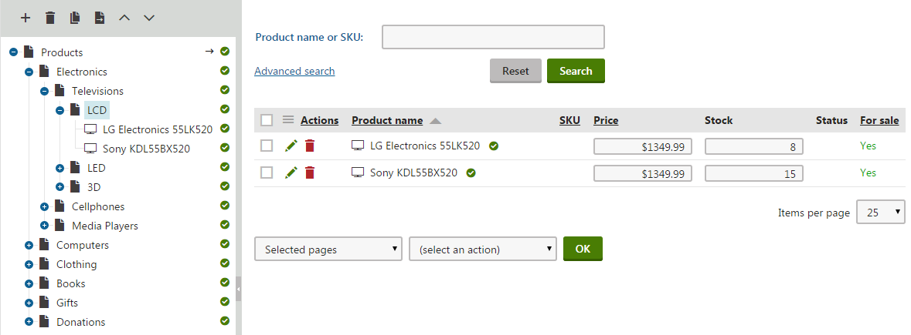
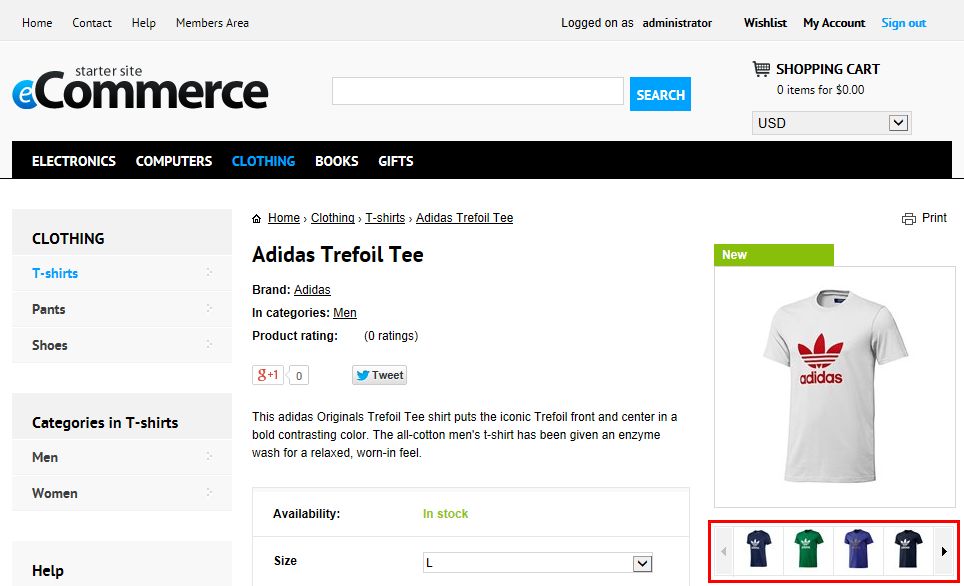
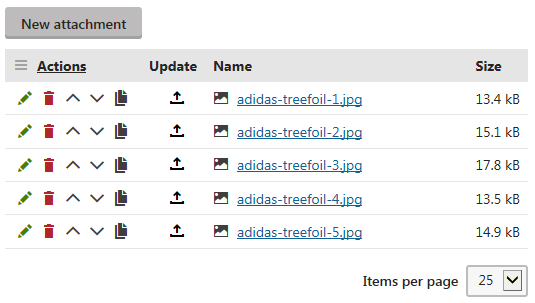

Products
Products are the most important objects in your on-line store. They feature the actual products and services that you offer and sell in multiple product types to customers.
Your customers can purchase products separately or with options, which may include various product accessories, additions, etc., or represent product attributes, e.g. its size or color. Additionally, the Kentico E-commerce Solution allows you to offer selected products as variants. You can configure the system to track inventory both for products and product variants.
You can assign internal and public statuses to products to inform users about the current state of products. You can also specify brands, manufacturers, suppliers and collections for your products, or attach images and other types of files to enhance your customer's purchase experience.
In Kentico, products exist as SKUs (product objects) associated with product type pages. This means that if you want to present a product on your website, you need to display a product type page with a product object assigned to this page.
License limitations for products
Kentico websites have a maximum limit on the number of enabled products (SKUs). The limit depends on the License Edition under which the site is running and the applied hotfix version (after evaluating feedback from partners and clients, Kentico has decided to increase the limits in hotfix 11.0.15).
|
License Edition |
SKU limit (initial) |
SKU limit (hotfix 11.0.15 or newer) |
|
Kentico CMS Base |
100 |
500 |
|
Kentico CMS Ultimate |
500 |
unlimited |
|
Kentico EMS |
unlimited |
unlimited |
The limit counts all active products and product variants, i.e. those that have the Allow for sale property enabled (on the General tab in the Products application). Product options are not included in the product count.
Global products count towards the limit of every site in the system. For example, if a site has 400 site-specific products and also uses 150 global products, the total number of products is 550.
Managing products in the Products application
You can manage products in the Products application (alternatively in the Pages application). In this part of the administration interface, you can see the product sections tree representing a selected part of your website structure. You can also see a list of all products placed into the currently selected section.
The content of the Products application page is determined by your on-line store settings and the configuration of the product filter.
Product sections tree
The sections tree shows (if displayed) a selected part of your website structure, either with or without the contained products. If you select a section, the system lists all products contained in the section. If you select a product, the system displays its editing interface, allowing you to modify the product's properties.
Deleting a section or product
If you decide to delete a section or product, click Delete ( ). The system then deletes the product type page, same as the assigned SKU if no preclusive dependency exists (e.g., the product is not contained in any order). Otherwise, only the page is deleted and the SKU is disabled and remains in the system.
). The system then deletes the product type page, same as the assigned SKU if no preclusive dependency exists (e.g., the product is not contained in any order). Otherwise, only the page is deleted and the SKU is disabled and remains in the system.
Multilingual store
Running a multilingual store allows you to switch between multiple language versions of the currently selected section or product. You can also enable the language version comparison mode and edit section/product language versions side-by-side.
Stand-alone SKUs
If stand-alone SKUs are allowed on the current site, the Stand-alone SKUs node is displayed above the sections tree. This node allows you to view a list of all stand-alone SKUs (product objects) existing on the current site.
Products list
In a selected section, you may need to display only products matching certain search criteria (name or number, department, manufacturer, etc.). To do so, select either a simplified or advanced filter, enter the required values and click Search.
You can Edit ( ) and Delete (
) products listed in a selected section.
) and Delete (
) products listed in a selected section.
Using the pair of drop‑down lists under the displayed product items, you can perform certain management tasks with multiple products at once (Move, Copy, Link, Delete, Translate, Publish, Archive). To do so, select either Selected pages or All pages in the first drop-down list, the required action in the second one and click OK.

Managing products - product sections tree and products list
Managing products in the Pages application
The recommended option is managing products in the Managing products in E-commerce application, but you can manage your products also in the Pages application. As this administration interface is designed primarily for page (website content) management, you can edit here more product type page properties than in the E-commerce Solution.
You can edit the frequently accessed product object (SKU) properties, for example price, description, etc., on the product page's Form tab. Other SKU-specific properties can be configured using the SKU tab (volume discounts, options, variants and pages).
Form tab
If you are editing a product (i.e. an SKU and the associated product type page) on the Form tab, the Remove SKU from this page action in the SKU binding section (available at the very bottom of the page) allows you to remove the bound SKU from the page. The system doesn't support the action (and hides the section) for products that use a workflow.
If you are editing a product type page only (i.e. no SKU is currently assigned), the Create new or assign existing SKU action allows you to assign an SKU (new or existing) to the page.
Reference
If you are editing a product in the Products application, the system offers the following tabs:
You may not be able to view some of the tabs (Workflow, Versions) based on your system's configuration.
General tab
On the General tab you can edit the more frequently accessed properties of the product. The system supports several product representations: standard product, membership, e-product and bundle. Standard products typically represent product articles and services.
The following properties (standard product) are shared by all product representations:
General |
|
|
Product name |
The name of the product that is displayed to your customers on the live site and to the users in the administration interface. |
|
SKU |
Allows you to specify an alphanumeric identifier, usually referred to as the product number, serial number or SKU number. You can use this identifier, for example, in your accounting records. |
|
Price |
Here you can specify the price of the product in the store's main currency. Depending on the configuration of the site's Prices include tax setting, enter the value with or without tax included. |
|
List price |
Here you can specify the list price, i.e. the recommended retail price (RRP) or manufacturer's suggested retail price (MSRP), of the product. The list price is typically determined by factors such as supply, demand and manufacturing costs. The system always displays the list price value as entered (without calculating taxes, etc.). |
|
Department |
Here you can specify a department for the product. You can add a new department directly, without the need to navigate to the dedicated Departments section:
Now you can use the department for any product that you offer in your on-line store. |
|
Tax class |
Here you can specify which tax applies to the product. Automatic taxes You can specify default tax classes for departments. This means that the system automatically applies the selected tax class to all new products from the given department. If suitable, you can also specify a default department for each product type. Therefore, you can create product in your store sections without considering which tax is the one you need. |
|
Brand |
Allows you to specify the product's brand. Brands can be defined in the dedicated Brands application (see Managing brands and manufacturers). Note: Brands are always related to a specific site, so they cannot be assigned to global products. |
|
Manufacturer |
Here you can specify the product manufacturer. You can add a new manufacturer directly, without the need to open the dedicated Manufacturers application:
Now you can use the manufacturer for any product that you offer in your on-line store. |
|
Supplier |
Here you can specify a supplier for the product. You can add a new supplier directly, without the need to open the dedicated Suppliers application:
Now you can use the supplier for any product that you offer in your on-line store. |
|
Collection |
Allows you to assign the product to a collection. Collections can be defined in the dedicated Collections application (see Managing product collections). Note: Collections are always related to a specific site, so they cannot be used for global products. |
|
Image |
Allows you to Upload file (usually an image file) depicting the product. After uploading the file, the system displays the name and size of the file and allows the user to perform the following actions:
|
|
Short description |
Here you can enter a short description of the product used for special product listings. |
|
Description |
Here you can enter a description of the product used for special product listings. |
|
Representing |
Allows you to specify a representation for the product. The system offers the standard product representation, i.e. Standard product, and specialized types derived from this general type, i.e. Membership, E-product and Bundle. |
Custom properties |
|
|
In this section you can edit:
If there is no such custom property defined in the system, the section is unavailable. |
|
Status |
|
|
In store from |
Indicates since when the product is available in your on-line store. The default value is the current date (i.e. the date of adding the product to the system). You can type in the value and you can also change it automatically by using |
|
Public status |
Here you can select a product status displayed to your customers - e.g. Featured. You can add a new public status directly, without the need to navigate to the dedicated Public status section: 1. Click New. 2. Enter the public status properties as required. 3. Click Save & Close. Now you can use the public status for any product that you offer in your on-line store. |
|
Internal status |
Here you can select a product status to be used for your internal business purposes, e.g. New model. You can add a new internal status directly, without the need to navigate to the dedicated Internal status section: 1. Click New. 2. Enter the internal status properties as required. 3. Click Save & Close. Now you can use the internal status for any product that you offer in your on-line store. |
|
Allow for sale |
Indicates if your customers can add to the shopping cart and purchase the product. |
Shipping |
|
|
Needs shipping |
Indicates if the product requires shipping from your on-line store warehouse to an address specified by the customer. Memberships and E-products do not require shipping. |
|
Package weight |
Allows you to specify package weight in units set for your online store. |
|
Package height |
Allows you to specify package height in units of your choice. |
|
Package width |
Allows you to specify package width in units of your choice. |
|
Package depth |
Allows you to specify package depth in units of your choice. |
Inventory |
|
|
Track inventory |
Here you can determine whether and how the system tracks product inventory:
If allowed (the Yes or By variants options), the system can offer the users inventory-related information such as the number of available product (product variant) items or quantity at which the product (product variant) needs to be reordered. You can also specify whether your customers can purchase the product (product variant) only if it is available in stock. |
|
Sell only if items available |
Indicates if your customers can purchase only quantity of the product (product variant) that is in stock (checked box). If you wish to use this property, the Track inventory property must be enabled (the Yes or By variants options). |
|
Available items |
Indicates the number of product items available in stock. If you wish to use this property, the Track inventory property must be enabled (the Yes option). |
|
Reorder at |
Indicates at which quantity you/your on-line store administrators should reorder the product. Available only if the Track inventory property is enabled (the Yes option). The system informs you about products that you should reorder in the Inventory report (in Store reports -> Products -> Inventory). You can also configure the Products widget (in the Store overview application) to display this information. |
|
Min items in one order |
Here you can specify the minimum number of product items in one order. Product variants If the product has its variants, the variants inherit the minimum and maximum numbers of items in one order from the product. If customers buy multiple variants of the same product, all variants need to be between the minimum and maximum quantity of each variant needs to be between the minimum and maximum allowed numbers of items. The quantity of variants is not counted together. |
|
Max items in one order |
Here you can specify the maximum number of product items in one order. Product variants If the product has its variants, the variants inherit the minimum and maximum numbers of items in one order from the product. If customers buy multiple variants of the same product, all variants need to be between the minimum and maximum quantity of each variant needs to be between the minimum and maximum allowed numbers of items. The quantity of variants is not counted together. |
AnalyticsThe section is not available if you are adding a global product. |
|
|
Conversion name |
Allows you to select a custom conversion that is logged when a customer purchases (orders) the product.
|
|
Conversion value |
Here you can enter a numerical value to be recorded by the system for the specified custom conversion on purchasing the product. The values are cumulative, i.e. when a conversion hit is logged, the specified value is added to the total sum previously recorded for the given conversion. You may insert a macro expression into this field to dynamically retrieve a value from the current site context. For example: {%ShoppingCartItem.UnitPrice%} This sample macro allows the custom conversion to log the price of the given product as its value. The advantage of a macro is that it retrieves the price dynamically, including any potential discounts that apply for the customer. |
 or clicking Now.
or clicking Now.Attachments tab
On the Attachments tab you can see a list of the currently selected product's attachments. In Kentico, attachments are a concept of attaching multiple files to your products and pages. You can easily add images, same as any other allowed types of files where required, and thus enhance your customers' experience.
For example, you can present your customers with featured images of a given product, i.e. you can create an image gallery, or simply want to provide them with various supplementary materials such as leaflets, e-guides, etc.
When attached to a product, the system can display images on the live site through an appropriate transformation or web part, e.g. the Attachment image gallery web part. It is therefore essential that you placed the web part into your product type template.

Displaying product images on the live site
To add a product attachment, click New attachment and open the required file. The system then displays the name and size of the file and allows the administrator to perform the following actions on the file:
Edit (
) - if the attachment is an image, clicking the icon opens the image in the built-in Image editor; see Editing images. If the attachment is not an image, clicking the icon opens the file in the built-in Metadata editor; see Editing file metadata.Delete (
) - removes the attachment from the product.Move up (
 ) and Move down (
) and Move down ( ) - re-orders the attachments. The order is stored in the AttachmentOrder property of each attachment. You can enter AttachmentOrder into the ORDER BY expression property of a displaying web part to have the attachments ordered accordingly.
) - re-orders the attachments. The order is stored in the AttachmentOrder property of each attachment. You can enter AttachmentOrder into the ORDER BY expression property of a displaying web part to have the attachments ordered accordingly.The order of attachments is not versioned with the product's (product page's) workflow (if applied).
This means that if you change the order of attachments in one version of the product, the order is changed in all other versions, too.
Clone (
 ) - allows you to quickly create a copy of the selected item, including its configuration. You can then modify the copy as required.
) - allows you to quickly create a copy of the selected item, including its configuration. You can then modify the copy as required.Update (
 ) - allows you to replace the attachment with a different attachment.
) - allows you to replace the attachment with a different attachment.
If you hover over the name of an image file attachment, the system displays the image's thumbnail. If you click an attachment's name, the attachment is opened.

Product attachments
Metadata tab
On the Metadata tab you can edit metadata of the product, for example page title, page tags, etc. You can use this type of product data for Search engine optimization (SEO), or to mark your product pages with key words, depending on their content.
If you enable Inherit for a given property, the system uses settings from the product's parent page, i.e. from its product section. For example, if the Page keywords property of the Televisions -> LCD product section is set to LCD, each product in this section has LCD set as its keyword (if enabled for each product).
Page settings |
|
|
Page title |
Here you can specify the title of the product page. When your customers view the product, the system displays the title in the header of the browser (or tab). The property is important also for Search engine optimization (SEO). This is because many search engines use the property in their search result lists. The system adds the content of the field into the <title> element in the HEAD section of the page output. |
|
Page description |
Allows you to enter a brief description of the product and its purpose, which may be used for Search engine optimization (SEO). Besides, the system uses the property if your customers search the site. The system adds the content of the field as a description meta element into the HEAD section of the product page. |
|
Page keywords |
Allows you to add meta keywords to the product. The system may use this type of metadata if your customers search the site (e.g. the built-in Smart search application). You need to separate multiple keywords with commas. |
Tags |
|
|
Page tag group |
Here you can select a tag group which the system will use for tagging the product. Please specify the actual tags using the Page tags property. |
|
Page tags |
Allows you to enter tags with which the system will tag the product. If you need to enter more than one tag, please ensure that the tags are separated with commas or blank spaces. A combination of the two separators in a single entry is valid, too. Therefore, the following examples are all valid entries for adding three tags, i.e. tag1, tag2 and tag3:
If you need to enter a tag consisting of more than one word, you should enclose it within quotation marks. You can enter multiple multi-word tags, which can also be separated with both blank spaces and commas:
You should use quotation marks also for tags containing special characters:
|
You can use macro expressions in the {%ColumnName%} format to insert values of the current product page's properties into the Page title or other metadata properties.
You can set up a page title prefix, page description prefix, page keywords prefix and page title format for all pages (including product pages) available on the site. See Editing metadata of pages for more details.
Options tab
On the Options tab you can specify which option categories (Option categories tab) and product variants (Variants tab) apply to the current product. You can also manage the option categories and product variants.
To add option categories, click Add categories and select appropriate categories in the displayed selection dialog. You can also create a new category. See Working with product options for more details.
To add product variants, click Define available variants and select option categories and variants available for the product. See Working with product variants for more details.
Categories tab
On the Categories tab you can assign categories, defined for the current site, to the product. The categories feature allows you to sort products based on topic-related groups. In addition to tags, it is therefore another approach to sorting your on-line store content.
If categories are assigned to the product, the system displays their list. You can use the Remove selected and Add categories actions. If no categories are assigned to the product, only the latter action is available. You can remove all listed category items at once by clicking ... next to Remove selected and then clicking Remove all.
Advanced tab
On the Advanced tab you can edit the following product properties:
Volume discounts
Volume discounts
On the Volume discounts tab you can see a list of volume discounts, which are applied when your customers purchase specified amounts of the product. The system automatically calculates and applies volume discounts during the checkout process when the customers add a given amount of product items to the shopping cart. You can create multiple volume discount levels, allowing you to apply different discounts for different amounts of purchased product items.
You can add a new volume discount by clicking New volume discount. You can also Edit (
) properties of existing volume discounts levels, and Delete (
) selected levels.
Related products
On the Related products tab you can build relationships between products. The relationship names need to be defined in the Relationship names application.
You can add relationships after clicking Add related page, and you can remove selected relationships from the system by clicking Delete (
). See Displaying related pages using named relationships for more details.
When building relationships between products that you offer in your on-line store, use only relationship names enabled for the current site.
Workflow
The Workflow tab is available only if a workflow is defined for the product.
Workflow is a sequence of steps that define the life cycle of the product. It allows you to set up a reviewing and approval process to ensure quality of content. For example, you can specify roles that the users play in the product's life cycle. Similarly, you can specify points in the life cycle where the users have influence on the product.
In the top section of the Workflow page you can see what workflow is currently applied to the product (e.g. Default workflow), and the current step of the workflow (e.g. Published). You can perform workflow actions (Publish, Reject, Archive, etc.) and toggle sending of notification emails (using the Send notification emails checkbox).
Product properties covered by workflow
Workflow covers the properties on the product's General tab, as well as Product attachments and page settings (i.e. the Page title, Page description and Page keywords properties accessible on the Metadata tab).
However, the following properties are NOT subject to workflow and their modifications affect the live site immediately:
The product image (i.e. the Image property shared by all product representations)
The Track inventory and Available items properties used for inventory management
E-product files (i.e. the Files property of the E-product representation)
The product content of bundles (i.e. the Products property of the Bundle representation)
Important: If using workflow in a multilingual store, the product properties covered by workflow are NOT shared between different language versions of a single product. Any updates of the product Price (or other key properties) need to be made separately for each language version. Alternatively, your developers can set up some form of automatic synchronization mechanism.
Workflow steps
In the Workflow steps section, the system displays all steps of the workflow currently applied to the product. The current workflow step is highlighted.
Workflow history
The Workflow history section displays workflow step history of the product, i.e. a list of all workflow status changes that the users made throughout the product's life cycle. For each status change, you can read its exact date and time, final workflow step, the user who took the action, and the type of action that was performed.
Versions
The Versions tab is available only if a workflow is defined for the product.
The system displays product history (the respective workflow version of the product) when the version is published, i.e. when a previous version of the product is replaced with the current version.
In the top section of the Versions page you can see what workflow is currently applied to the product (e.g. Default workflow), and the current step of the workflow (e.g. Published).
Page history
The Page history table displays product history (a list of workflow versions of the product). You can perform the following actions with the versions:
View version (
 ) - allows you to see details of the product version. If you click the icon, the system redirects you to the Page version page.
) - allows you to see details of the product version. If you click the icon, the system redirects you to the Page version page.Roll back version (
 ) - allows you to roll back any changes made to the product since adding the product version.
) - allows you to roll back any changes made to the product since adding the product version.Delete (
) - allows you to remove the product version.
Clicking Clear history removes all versions except the latest one.
You can change the length of version history by configuring the Version history length property in Settings -> Content -> Content management.
Automatic version numbering
The system supports automatic version numbering:
If you applied a workflow without content locking, the system uses automatic version numbering by default.
If you applied a workflow with content locking, using automatic version numbering is optional. To enable the feature, go to Settings -> Content -> Content management and enable the Use automatic version numbering property.
Automatic version numbering works as shown in the following example:
0.1 - the first version of the product when it is created.
0.2 - the second modification of the product.
1.0 - the first published version of the product.
1.1 - the first modification of the published product.
2.0 - the second published version of the product.
Pages
On the Pages tab you can see a list of pages to which the currently edited SKU (product object) is assigned. Product pages allow you to present the products and services to your customers on the live site.
Click Edit page (
) to edit the given page or click Navigate to page (
) to view the page on the live site.
Preview tab
On the Preview tab you can preview the current version of the product before it is published (if you are using a workflow for the product). You can also preview the product's content with caching disabled, which allows you to see the content even if the live site displays a cached version.
You are using a workflow, and the product's Publish from property (if available) is set to a future date and time.
The tab displays content that will be published after the specified date and time.
You are using a workflow, and the product hasn't got to the Published step yet.
The tab displays content that you have created in the current workflow step.
You are using a workflow, the product had already got to the Published workflow step, and its workflow cycle was restarted (i.e. the product was switched from the Published/Archived workflow step back to the Edit step and is going through the workflow cycle again).
The tab displays content from the current workflow step.